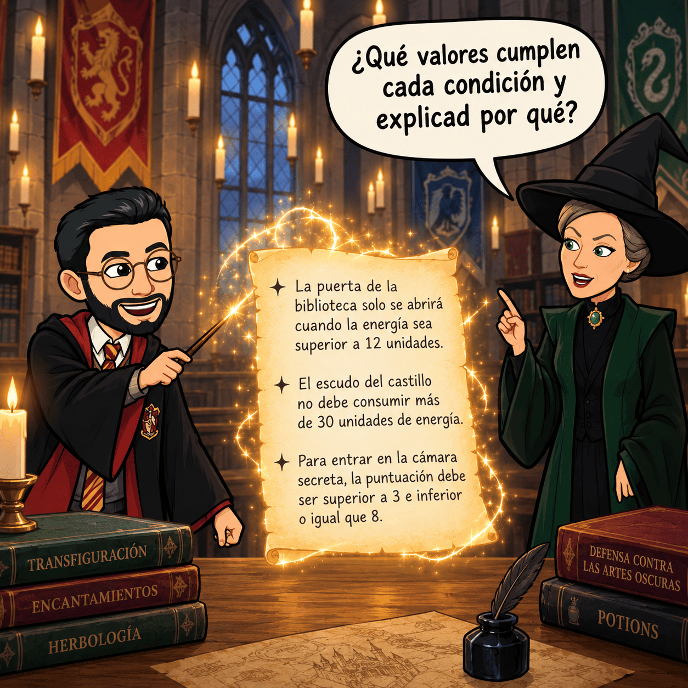
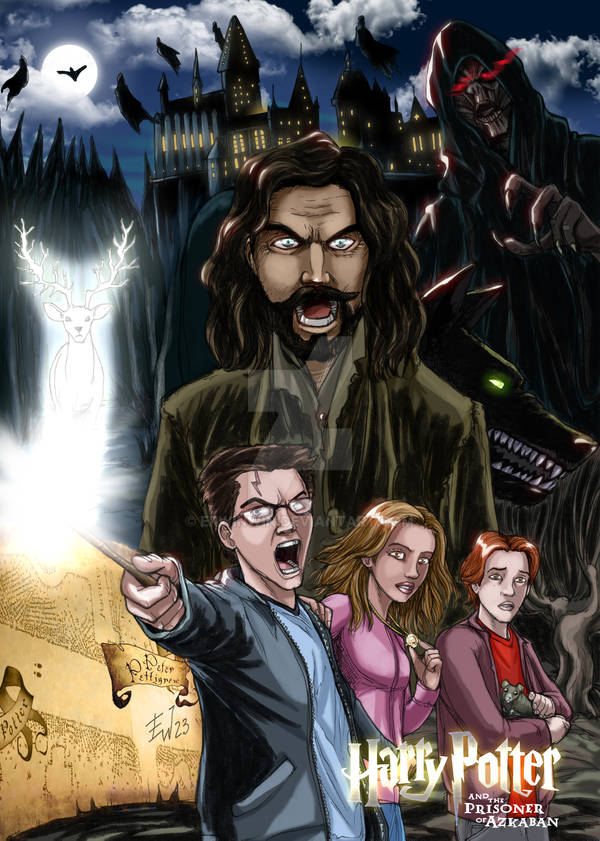
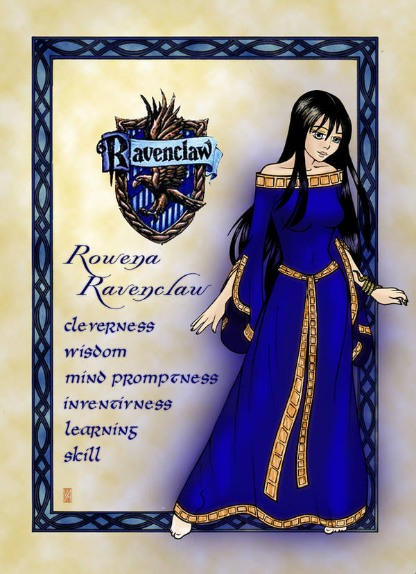
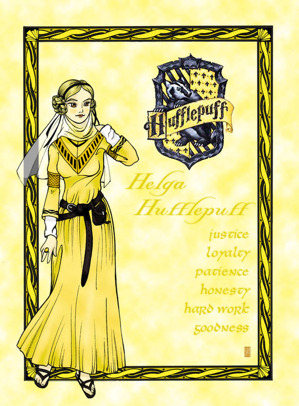
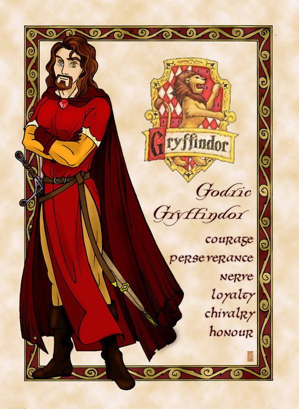
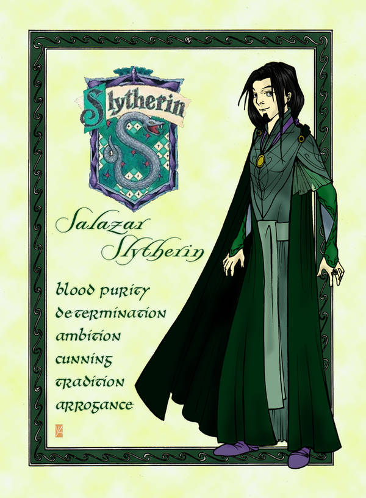
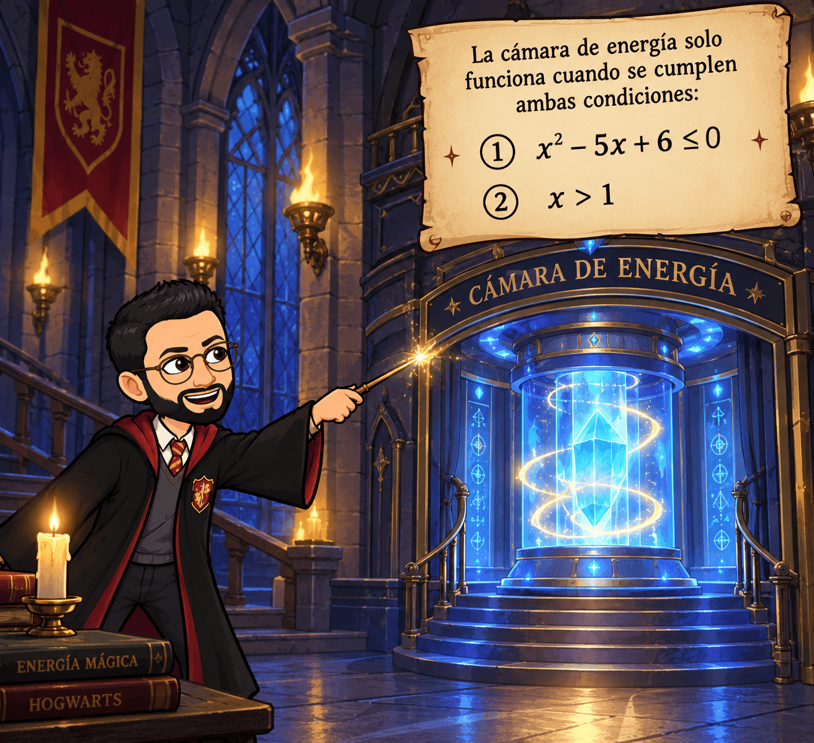

FASE 1. MOTIVAR. El mensaje que nadie consigue descifrar
Leed e intentad descifrar el siguiente mensaje.
A los estudiantes de cuarto curso de Hogwarts:
Las protecciones mágicas del castillo están fallando. Algunas puertas no se abren, otras se cierran cuando no deberían y la barrera que protege la biblioteca consume demasiada energía.
El profesor Flitwick ha encontrado tres instrucciones que controlan las protecciones:
«La puerta de la biblioteca solo se abrirá cuando la energía sea superior a 12 unidades».
«El escudo del castillo no debe consumir más de 30 unidades de energía».
«Para entrar en la cámara secreta, la puntuación debe ser superior a 3 e inferior o igual que 8».
El problema es que nadie ha conseguido interpretar correctamente estas instrucciones. Algunos magos creen que cada una tiene una única solución. Otros aseguran que existen muchos valores posibles.
La profesora McGonagall necesita vuestra ayuda. Si conseguís interpretar las instrucciones y encontrar los valores permitidos, podréis restaurar las protecciones de Hogwarts.
Vuestra misión consiste en descubrir qué valores cumplen cada condición y explicar por qué.

Primera reflexión: ¿siempre buscamos un único número?
Imagina que una puerta se abre cuando la energía es superior a 12 unidades.
- ¿Se abrirá con 10 unidades? No, porque 10 no supera a 12.
- ¿Se abrirá con 12 unidades exactas? Tampoco, porque 12 es igual a 12, pero no es superior.
- ¿Se abrirá con 15 unidades? Sí, porque 15 es mayor que 12.
- ¿Y con 20 unidades? También.
Por tanto, la condición no tiene una única solución. La cumplen muchos valores: 13, 14, 15, 20, 100…
Podemos escribirla utilizando una letra:
\( x>12 \)
La letra \(x\) representa la cantidad de energía. El símbolo \(>\) significa «mayor que».
Ahora piensa en la segunda instrucción: el escudo no puede consumir más de 30 unidades.
En este caso, 25 unidades serían válidas. También lo serían 30, porque el límite está permitido. Sin embargo, 31 unidades superarían el máximo.
La condición se escribe así:
\( x\leq30 \)
Por último, la cámara secreta exige una puntuación superior a 3 e inferior o igual que 8. Esto significa que 3 no está permitido, pero 8 sí.
\( 3<x\leq8 \)
Durante esta aventura aprenderás a resolver este tipo de condiciones mediante las desigualdades y las inecuaciones.
FASE 2. ACTIVAR. Recuperamos las herramientas matemáticas
Antes de descifrar los hechizos, necesitas recordar algunas operaciones algebraicas. No vamos a estudiar de nuevo las ecuaciones en profundidad: solo repasaremos lo imprescindible para trabajar con inecuaciones.
Actividad 1. Los pergaminos deteriorados
Hermione ha encontrado varios pergaminos con operaciones incompletas. Resuelve las siguientes actividades en tu cuaderno. Después, compara tus respuestas con las soluciones de la pizarra.
Ejercicio 1. Simplifica las expresiones.
a) \(4x+7x-3x\)
b) \(5x-2+3x+8\)
c) \(2(x+4)-3x\)
d) \(x^2-9\), expresándolo como producto.
Soluciones explicadas
a) Sumamos los coeficientes de los términos semejantes:
\( 4x+7x-3x=(4+7-3)x=\boxed{8x} \)
b) Agrupamos las \(x\) y los números:
\( 5x-2+3x+8=8x+6 \)
Por tanto, el resultado es \(\boxed{8x+6}\).
c) Primero multiplicamos el 2 por cada término del paréntesis:
\( 2(x+4)-3x=2x+8-3x \)
Reducimos los términos semejantes:
\( \boxed{-x+8} \)
d) Recordamos que una diferencia de cuadrados se puede factorizar:
\( x^2-9=x^2-3^2 \)
Aplicamos la identidad correspondiente:
\( \boxed{(x-3)(x+3)} \)
Actividad 2. Las cerraduras de Hogwarts
Una cerradura mágica necesita que encuentres el valor de una incógnita. Resuelve estas ecuaciones para recordar cómo despejar una letra.
a) \(3x+5=20\)
Restamos 5:
\( 3x=15 \)
Dividimos entre 3:
\( \boxed{x=5} \)
b) \(2(x-1)=x+5\)
Quitamos el paréntesis:
\( 2x-2=x+5 \)
Restamos \(x\) y sumamos 2:
\( x=7 \)
Por tanto, \(\boxed{x=7}\).
c) \(x^2-5x+6=0\)
Factorizamos:
\( (x-2)(x-3)=0 \)
Un producto es cero cuando al menos uno de sus factores es cero:
\( x-2=0\Rightarrow x=2 \)
\[ x-3=0\Rightarrow x=3 \]
Las soluciones son \(\boxed{x=2\text{ o }x=3}\).
Actividad 3. ¿Qué símbolo ha utilizado el profesor Flitwick?
Indica si cada afirmación es verdadera o falsa. Explica tus respuestas.
a) \(5<9\)
b) \(7\leq7\)
c) \(-4>-2\)
d) \(8\geq3\)
e) \(6<6\)
f) \(-1\leq0\)
Soluciones:
a) Verdadera: 5 es menor que 9.
b) Verdadera: el símbolo \(\leq\) permite la igualdad.
c) Falsa: \(-4\) es menor que \(-2\).
d) Verdadera: 8 es mayor que 3.
e) Falsa: 6 es igual a 6, no menor.
f) Verdadera: \(-1\) es menor que 0.
Actividad 4. El error del aprendiz de mago
Un estudiante intenta resolver esta desigualdad:
\( 3<8 \)
Multiplica ambos miembros por \(-1\) y escribe:
\( -3<-8 \)
¿Es correcto?
No. En la recta numérica, \(-3\) está a la derecha de \(-8\), por lo que es mayor.
La transformación correcta es:
\( 3<8\quad\Longrightarrow\quad -3>-8 \)
Recuerda este descubrimiento: cuando multiplicamos o dividimos ambos miembros de una desigualdad por un número negativo, tenemos que invertir el signo.

FASE 3. EXPLORAR. Las primeras pruebas del castillo
Ya has recuperado las herramientas básicas. Ahora vas a enfrentarte a cuatro pruebas que te ayudarán a descubrir cómo funcionan las inecuaciones.
Intenta resolver cada prueba antes de leer la solución.
Prueba 1. El cristal de energía
El cristal que mantiene encendida una torre solo funciona si su energía es inferior a 10 unidades.
Llamamos \(x\) a la energía del cristal.
a) Escribe la condición matemática.
b) Comprueba si son válidos los valores \(x=4\), \(x=10\) y \(x=13\).
c) Escribe otros cuatro valores que cumplan la condición.
Solución
La condición es:
\( x<10 \)
Probamos los valores:
-
- \(x=4\): cumple, porque \(4<10\).
- \(x=10\): no cumple, porque \(10\) no es menor que 10.
- \(x=13\): no cumple, porque 13 es mayor que 10.
- Otros valores válidos son 9, 8, 0 y \(-5\).
- \(x=4\): cumple, porque \(4<10\).
Hay infinitos valores reales que cumplen esta condición. Por eso, en lugar de buscar un solo número, buscamos un conjunto de soluciones.
Prueba 2. La despensa de las pociones
Harry dispone de 20 galeones. Cada frasco cuesta 3 galeones y necesita reservar 2 galeones para comprar una etiqueta mágica. ¿Cuántos frascos puede comprar sin superar su presupuesto?
Llamamos \(x\) al número de frascos.
El gasto total será:
\( 3x+2 \)
Como no puede superar los 20 galeones:
\( 3x+2\leq20 \)
Restamos 2:
\( 3x\leq18 \)
Dividimos entre 3:
\( \boxed{x\leq6} \)
Puede comprar como máximo 6 frascos. Como los frascos se compran enteros, los valores válidos son 0, 1, 2, 3, 4, 5 y 6.
Prueba 3. El suelo encantado
Una baldosa activa una trampa cuando la expresión \(x^2-9\) es positiva. Queremos encontrar los valores que activan la trampa.
Planteamos:
\( x^2-9>0 \)
Factorizamos:
\( (x-3)(x+3)>0 \)
Las raíces son \(x=3\) y \(x=-3\). Estas raíces dividen la recta real en tres intervalos.
Probamos un valor en cada uno:
- Para \(x=-4\): \(16-9=7\), positivo.
- Para \(x=0\): \(0-9=-9\), negativo.
- Para \(x=4\): \(16-9=7\), positivo.
La expresión es positiva fuera de las raíces. Por tanto:
\( \boxed{x\in(-\infty,-3)\cup(3,+\infty)} \)
Las raíces no se incluyen porque buscamos valores estrictamente mayores que cero.
Prueba 4. La entrada a la cámara secreta
Para entrar en una cámara, la puntuación debe ser superior a 2 y menor o igual que 7.
Escribimos las dos condiciones:
\( \begin{cases} x>2\\ x\leq7 \end{cases} \)
La primera permite valores mayores que 2. La segunda permite valores menores o iguales que 7.
Solo sirven los valores que cumplen ambas condiciones:
\( \boxed{x\in(2,7]} \)
El 2 queda excluido, pero el 7 se incluye.
¿Qué has descubierto?
En las pruebas anteriores has encontrado cuatro situaciones distintas: una condición con infinitas soluciones, una inecuación de primer grado, una inecuación de segundo grado y un sistema de inecuaciones.
A partir de ahora aprenderás a resolver cada una con un procedimiento que puedas utilizar en ejercicios nuevos.
FASE 4. ESTRUCTURAR. Aprendemos a resolver las inecuaciones
Esta es la parte más importante de la aventura. Dedica tiempo a comprender cada procedimiento y a copiar los ejemplos resueltos. No te limites a memorizar los pasos: intenta entender por qué se realiza cada operación.
1. Las desigualdades y sus propiedades
Una desigualdad compara dos cantidades. Por ejemplo:
\( 4<9 \)
Esto se lee «cuatro es menor que nueve».
Los símbolos que debes conocer son:
- \(<\): menor que.
- \(>\): mayor que.
- \(\leq\): menor o igual que.
- \(\geq\): mayor o igual que.
Cuando aparece una incógnita, podemos obtener distintas desigualdades según el valor que le asignemos.
Por ejemplo:
\( x+3<8 \)
Si \(x=2\), la desigualdad es verdadera porque \(2+3<8\). Si \(x=7\), es falsa porque \(7+3\) no es menor que 8.
Una inecuación es una desigualdad con incógnitas que queremos resolver. Resolverla significa encontrar todos los valores que la hacen verdadera.
Ejemplo resuelto 1. La contraseña de la biblioteca
La contraseña numérica debe ser mayor o igual que 15.
Si llamamos \(x\) a la contraseña, escribimos:
\( x\geq15 \)
Las soluciones son 15, 16, 17, 18 y todos los números mayores que 15, si trabajamos con números reales.
Ejemplo resuelto 2. El límite de la poción
Una poción no puede superar los 80 grados de temperatura.
Si \(t\) representa la temperatura:
\( t\leq80 \)
La temperatura 80 está permitida, pero 81 no.
Las propiedades que necesitas recordar
Puedes sumar o restar el mismo número en los dos miembros de una desigualdad sin cambiar su sentido.
Por ejemplo:
\( x+5<12 \)
Restamos 5:
\(x<7 \)
También puedes multiplicar o dividir ambos miembros por un número positivo sin cambiar el signo.
\( 4x\geq20 \)
Dividimos entre 4:
\( x\geq5 \)
Sin embargo, cuando multiplicas o divides por un número negativo, debes invertir el signo.
\( -3x\leq12 \)
Dividimos entre \(-3\) y cambiamos \(\leq\) por \(\geq\):
\( \boxed{x\geq-4} \)
Ejercicios de pizarra
Resuelve las siguientes desigualdades.
a) \(x+7<15\)
Restamos 7:
\( \boxed{x<8} \)
b) \(5x\geq35\)
Dividimos entre 5:
\( \boxed{x\geq7} \)
c) \(-2x>10\)
Dividimos entre \(-2\) e invertimos el signo:
\( \boxed{x<-5} \)
d) \(9-3x\leq0\)
Restamos 9:
\( -3x\leq-9 \)
Dividimos entre \(-3\) e invertimos el signo:
\( \boxed{x\geq3} \)
2. Representamos las soluciones mediante intervalos
Cuando una inecuación tiene infinitas soluciones, resulta útil expresarlas mediante intervalos.
Por ejemplo, la solución \(x<4\) contiene todos los números menores que 4. La escribimos así:
\( (-\infty,4) \)
El paréntesis indica que 4 no está incluido.
Si la solución es \(x\leq4\), escribimos:
\( (-\infty,4] \)
Ahora sí incluimos el 4.
Observa otros ejemplos:
- \( x>2\Rightarrow(2,+\infty) \)
- \( x\geq2\Rightarrow[2,+\infty) \)
- \( -3<x\leq5\Rightarrow(-3,5] \)
Los corchetes incluyen el extremo y los paréntesis lo excluyen. Con el infinito siempre se utilizan paréntesis.
Ejemplo resuelto
La puerta de una torre solo admite valores de \(x\) mayores o iguales que \(-2\) y menores que 6.
Escribimos la condición:
\( -2\leq x<6 \)
En forma de intervalo:
\( \boxed{[-2,6)} \)
El \(-2\) se incluye, pero el 6 no.
Ejercicios
Expresa las siguientes soluciones como intervalos.
a) \(x<7\)
b) \(x\geq-5\)
c) \(1<x\leq9\)
d) \(-4\leq x\leq2\)
Soluciones:
a) \((-\infty,7)\)
b) \([-5,+\infty)\)
c) \((1,9]\)
d) \([-4,2]\)
3. Inecuaciones de primer grado
Una inecuación de primer grado es aquella en la que la incógnita aparece elevada a 1.
Por ejemplo:
\( 3x+5<17 \)
Su resolución consiste en despejar la incógnita, de forma parecida a como haríamos con una ecuación. La diferencia es que trabajamos con una desigualdad y debemos conservar correctamente su sentido.
Ejemplo resuelto 1. La puerta de Gryffindor
La puerta se abre cuando la expresión \(4x+3\) es menor que 23.
Resuelve:
\( 4x+3<23 \)
Restamos 3:
\( 4x<20 \)
Dividimos entre 4:
\( \boxed{x<5} \)
La solución en forma de intervalo es:
\( \boxed{(-\infty,5)} \)
El valor 5 no sirve, porque haría que la expresión valiera exactamente 23.
Ejemplo resuelto 2. El desafío de las dos varitas
Rowena Ravenclaw vino de la cañada. Era una bruja notable por su inteligencia y creatividad; ella ideó los pisos siempre cambiantes y las escaleras móviles del castillo de Hogwarts, e inventó la frase "Una inteligencia sin límites es el mayor tesoro de los hombres". Era tan inteligente que resolvió el problema de las dos varitas. Demuestra ser un buen miembro de la casa Ravenclaw resolviendo la siguiente inecuación:
\( 7x-4\geq3x+12 \)
Restamos \(3x\) en ambos miembros:
\( 4x-4\geq12 \)
Sumamos 4:
\( 4x\geq16 \)
Dividimos entre 4:
\( \boxed{x\geq4} \)

Ejemplo resuelto 3. El hechizo de los paréntesis
Helga Hufflepuff vino de un ancho valle; estaba a favor de la lealtad, la honestidad y la dedicación. En El cáliz de fuego, se dice que consideraba que "el mayor mérito de todos era romperse los codos". Además, En La Orden del Fénix, se dice que ella se quedaba con "el resto" de los estudiantes después de la selección de sus colegas. Podría parecer un paréntesis de bondad, integración, lealtad y trabajo... pero la realidad es que se la honró tanto que incluso una gran casa llevaba su nombre. Demuestra ser un buen miembro de la casa Hufflepuff resolviendo la siguiente inecuación:
\( 3(x-2)+5<2x+8 \)
Primero quitamos los paréntesis:
\( 3x-6+5<2x+8 \)
Reducimos los términos semejantes:
\( 3x-1<2x+8 \)
Restamos \(2x\):
\( x-1<8 \)
Sumamos 1:
\( \boxed{x<9} \)

Ejemplo resuelto 4. Una instrucción con fracciones
Godric Gryffindor, un gran mago honorable y valiente nacido en Godric's Hollow, el mismo pueblo que Harry y Albus Dumbledore, es conocido por ser un "mago con las fracciones". Demuestra ser un buen miembro de la casa Gryffindor resolviendo esta inecuación:
\( \dfrac{x+1}{2}\leq\dfrac{x+5}{3} \)
Multiplicamos los dos miembros por 6, el mínimo común múltiplo de los denominadores. Como 6 es positivo, no cambiamos el sentido de la desigualdad:
\( 3(x+1)\leq2(x+5) \)
Quitamos paréntesis:
\( 3x+3\leq2x+10 \)
Restamos \(2x\):
\( x+3\leq10 \)
Restamos 3:
\( \boxed{x\leq7} \)

Ejemplo resuelto 5. Cuando aparece un número negativo
Resuelve:
\( 5-2x>13 \)
Restamos 5:
\( -2x>8 \)
Dividimos entre \(-2\). Como el divisor es negativo, invertimos el signo:
\( \boxed{x<-4} \)
Ejemplo resuelto 6. Una inecuación imposible
Salazar Slytherin apreciaba a la gente que utilizaba cualquier medio para lograr sus fines, preferentemente con pura ascendencia de sangre mágica pero, sobre todo, con inventiva, determinación, un cierto desdén por las normas, astucia, aspiraciones de grandeza y hambre de poder. También era conocido por resolver problemas sin solución para otros magos, por ello demuestra que eres un buen miembro de la casa Slytherin resolviendo la siguiente inecuación:
\( 3x+5<3x+1 \)
Restamos \(3x\):
\( 5<1 \)
Esta afirmación es falsa. No existe ningún valor de \(x\) que la haga verdadera.
Por tanto:
\( \boxed{S=\varnothing} \)

Ejemplo resuelto 7. Una inecuación que siempre se cumple
Resuelve:
\( 4x+8\geq4x-2 \)
Restamos \(4x\):
\( 8\geq-2 \)
Esta afirmación es verdadera siempre. Todos los números reales son solución:
\( \boxed{S=\mathbb{R}} \)
Practica en tu cuaderno
Resuelve estas inecuaciones y escribe sus soluciones como intervalos.
- \(6x-7<17\)
- \(8x+3\geq5x+18\)
- \(4(x+2)\leq2x+14\)
- \(9-3x>18\)
- \(\dfrac{x-2}{3}+1\leq4\)
- \(5-2(x+1)\geq3x-7\)
Soluciones desarrolladas
1.
\( 6x-7<17 \)
\( 6x<24 \)
\( \boxed{x<4} \)
Intervalo: \((-\infty,4)\).
2.
\( 8x+3\geq5x+18 \)
\( 3x\geq15 \)
\( \boxed{x\geq5} \)
Intervalo: \([5,+\infty)\).
3.
\( 4x+8\leq2x+14 \)
\( 2x\leq6 \)
\( \boxed{x\leq3} \)
Intervalo: \((-\infty,3]\).
4.
\( 9-3x>18 \)
\( -3x>9 \)
Dividimos entre \(-3\) e invertimos el signo:
\( \boxed{x<-3} \)
Intervalo: \((-\infty,-3)\).
5.
\( \dfrac{x-2}{3}+1\leq4 \)
Restamos 1:
\( \dfrac{x-2}{3}\leq3 \)
Multiplicamos por 3:
\( x-2\leq9 \)
\( \boxed{x\leq11} \)
Intervalo: \((-\infty,11]\).
6.
\( 5-2(x+1)\geq3x-7 \)
Quitamos paréntesis:
\( 5-2x-2\geq3x-7 \)
\( 3-2x\geq3x-7 \)
Sumamos \(2x\) y 7:
\( 10\geq5x \)
Dividimos entre 5:
\( \boxed{x\leq2} \)
Intervalo: \((-\infty,2]\).
4. Inecuaciones de segundo grado
Las inecuaciones de segundo grado contienen una incógnita elevada al cuadrado. Para resolverlas, no basta con despejar la letra: debemos estudiar en qué intervalos la expresión es positiva o negativa.
Ejemplo resuelto 1. La protección de la torre
Resuelve:
\( x^2-5x+6>0 \)
Primero factorizamos la expresión:
\( (x-2)(x-3)>0 \)
Las raíces son 2 y 3. Dividen la recta real en tres intervalos:
\( (-\infty,2),\quad(2,3),\quad(3,+\infty) \)
Probamos un valor de cada intervalo.
Si \(x=0\):
\( 0^2-5\cdot0+6=6>0 \)
Si \(x=2{,}5\):
\( 2{,}5^2-5\cdot2{,}5+6=-0{,}25<0 \)
Si \(x=4\):
\( 4^2-5\cdot4+6=2>0 \)
La expresión es positiva en los intervalos exteriores. Como la desigualdad es estricta, no incluimos las raíces.
\( \boxed{(-\infty,2)\cup(3,+\infty)} \)
Ejemplo resuelto 2. El escudo entre dos límites
Resuelve:
\( x^2-16\leq0 \)
Factorizamos:
\( (x-4)(x+4)\leq0 \)
Las raíces son \(-4\) y 4. La expresión es negativa entre ellas y vale cero en los extremos.
Como buscamos valores menores o iguales que cero, incluimos ambos extremos:
\( \boxed{[-4,4]} \)
Ejemplo resuelto 3. La parábola invertida
Resuelve:
\( -x^2+6x-8>0 \)
Multiplicamos por \(-1\) e invertimos el signo:
\( x^2-6x+8<0 \)
Factorizamos:
\( (x-2)(x-4)<0 \)
La expresión es negativa entre las raíces 2 y 4:
\( \boxed{(2,4)} \)
Ejemplo resuelto 4. Una expresión que nunca es negativa
Resuelve:
\( x^2+3<0 \)
El cuadrado de cualquier número real es mayor o igual que cero:
\( x^2\geq0 \)
Por tanto:
\( x^2+3\geq3 \)
La expresión nunca será menor que cero. No hay soluciones reales:
\( \boxed{S=\varnothing} \)
Ejemplo resuelto 5. Una solución formada por dos intervalos
Resuelve:
\( x^2-4x\geq0 \)
Sacamos factor común:
\( x(x-4)\geq0 \)
Las raíces son 0 y 4.
- Si \(x<0\), los dos factores son negativos y su producto es positivo.
- Si \(0<x<4\), un factor es positivo y el otro negativo. El producto es negativo.
- Si \(x>4\), los dos factores son positivos y su producto es positivo.
Como buscamos valores positivos o iguales a cero, incluimos las raíces:
\( \boxed{(-\infty,0]\cup[4,+\infty)} \)
Ejemplo resuelto 6. Una raíz doble
Resuelve:
\( x^2-6x+9\leq0 \)
Factorizamos:
\( (x-3)^2\leq0 \)
Un cuadrado nunca es negativo. Solo vale cero cuando \(x=3\).
Por tanto:
\( \boxed{S=\{3\}} \)
La solución es un único número, no un intervalo.
Practica: las protecciones cuadráticas
Resuelve las siguientes inecuaciones.
a) \(x^2-9x+20\leq0\)
b) \(x^2-25>0\)
c) \(-x^2+5x-6\geq0\)
d) \(x^2+2x-8<0\)
e) \(x^2-4x+4>0\)
Soluciones desarrolladas
a) Factorizamos:
\( (x-4)(x-5)\leq0 \)
La expresión es negativa entre las raíces e igual a cero en ellas:
\( \boxed{[4,5]} \)
b) Factorizamos:
\( (x-5)(x+5)>0 \)
El producto es positivo fuera de las raíces:
\( \boxed{(-\infty,-5)\cup(5,+\infty)} \)
c) Multiplicamos por \(-1\) e invertimos el signo:
\( x^2-5x+6\leq0 \)
Factorizamos:
\( (x-2)(x-3)\leq0 \)
La solución es:
\( \boxed{[2,3]} \)
d) Factorizamos:
\( (x+4)(x-2)<0 \)
La expresión es negativa entre las raíces:
\( \boxed{(-4,2)} \)
e) Escribimos el cuadrado:
\( (x-2)^2>0 \)
Un cuadrado es positivo para todos los números reales excepto cuando vale cero, lo que ocurre en \(x=2\).
\( \boxed{(-\infty,2)\cup(2,+\infty)} \)
5. Sistemas de inecuaciones
A veces, una puerta mágica no se abre con una sola condición. Puede exigir una energía mínima y, al mismo tiempo, imponer un límite máximo.
Un sistema de inecuaciones reúne varias condiciones que deben cumplirse simultáneamente.
Para resolverlo, resolvemos cada inecuación por separado y después buscamos los valores comunes a todas las soluciones. Esta operación se llama intersección.
Ejemplo resuelto 1. La entrada a la cámara de los secretos
Resuelve:
\( \begin{cases} x>1\\ x\leq6 \end{cases} \)
- La primera condición permite todos los valores mayores que 1.
- La segunda permite todos los valores menores o iguales que 6.
Los valores que cumplen ambas condiciones son:
\( \boxed{(1,6]} \)
Ejemplo resuelto 2. Dos condiciones de energía
Resuelve:
\( \begin{cases} 2x-4>0\\ x+2\leq7 \end{cases} \)
Resolvemos la primera:
\( 2x>4\Rightarrow x>2 \)
Resolvemos la segunda:
\( x\leq5 \)
La solución común es:
\( \boxed{(2,5]} \)
Ejemplo resuelto 3. Una puerta imposible
Resuelve:
\( \begin{cases} x<3\\ x\geq7 \end{cases} \)
No hay ningún número que sea menor que 3 y, a la vez, mayor o igual que 7.
\( \boxed{S=\varnothing} \)
Ejemplo resuelto 4. Un sistema con una inecuación cuadrática
Resuelve:
\( \begin{cases} x^2-9\leq0\\ x>0 \end{cases} \)
La primera inecuación tiene como solución:
\( [-3,3] \)
La segunda tiene como solución:
\( (0,+\infty) \)
La parte común es:
\( \boxed{(0,3]} \)
Ejemplo resuelto 5. El acceso al torneo
Para entrar en el torneo de Hogwarts, una puntuación debe ser superior a 4 y no superar los 12 puntos.
\( \begin{cases} x>4\\ x\leq12 \end{cases} \)
La solución es:
\( \boxed{(4,12]} \)
Si la puntuación solo puede ser un número entero, los valores permitidos son 5, 6, 7, 8, 9, 10, 11 y 12.
Practica: abre las puertas
Resuelve los siguientes sistemas.
a) \(\{x\geq-3,\ x<4\}\)
b) \(\{x>5,\ x\leq5\}\)
c) \(\{2x+4\geq0,\ x-3<2\}\)
d) \(\{x^2-4\leq0,\ x\geq1\}\)
Soluciones desarrolladas
a) Las condiciones son \(x\geq-3\) y \(x<4\). Por tanto:
\( \boxed{[-3,4)} \)
b) No se puede ser estrictamente mayor que 5 y, al mismo tiempo, menor o igual que 5.
\( \boxed{S=\varnothing} \)
c) Resolvemos cada condición:
\( 2x+4\geq0\Rightarrow x\geq-2 \)
\( x-3<2\Rightarrow x<5 \)
La solución común es:
\( \boxed{[-2,5)} \)
d) La primera condición es:
\( x^2-4\leq0\Rightarrow x\in[-2,2] \)
La segunda exige \(x\geq1\). La intersección es:
\( \boxed{[1,2]} \)
6. Problemas de inecuaciones
Para resolver problemas, sigue siempre este orden:
Primero, lee el enunciado y averigua qué información tienes. Después, define la incógnita, traduce las condiciones al lenguaje algebraico, resuelve la inecuación o el sistema y, por último, interpreta la solución en el contexto del problema.
Ejemplo resuelto 1. El presupuesto de Hermione
Hermione dispone de 45 galeones. Necesita comprar un libro que cuesta 12 galeones y varios frascos que cuestan 3 galeones cada uno. ¿Cuántos frascos puede comprar como máximo?
Llamamos \(x\) al número de frascos.
El coste total es:
\( 12+3x \)
No puede superar los 45 galeones:
\( 12+3x\leq45 \)
Restamos 12:
\( 3x\leq33 \)
Dividimos entre 3:
\( x\leq11 \)
Como el número de frascos debe ser entero y no negativo, puede comprar como máximo 11 frascos.
Ejemplo resuelto 2. La duración de un hechizo
Un hechizo consume 6 unidades de energía por minuto. Al activarlo, dispone de 42 unidades. ¿Durante cuánto tiempo puede mantenerse activo si la energía debe ser positiva?
Llamamos \(t\) al tiempo en minutos.
La energía restante es:
\( 42-6t \)
Debe ser mayor que cero:
\( 42-6t>0 \)
Restamos 42:
\( -6t>-42 \)
Dividimos entre \(-6\) e invertimos el signo:
\( t<7 \)
Además, el tiempo no puede ser negativo. Por tanto:
\( \boxed{0\leq t<7} \)
El hechizo puede mantenerse activo durante menos de 7 minutos.
Ejemplo resuelto 3. La zona segura de una barrera
Una barrera funciona correctamente cuando:
\( -x^2+8x-12\geq0 \)
Multiplicamos por \(-1\) e invertimos el signo:
\( x^2-8x+12\leq0 \)
Factorizamos:
\( (x-2)(x-6)\leq0 \)
La expresión es negativa entre las raíces e igual a cero en ellas.
\( \boxed{x\in[2,6]} \)
La barrera funciona cuando el valor de \(x\) está entre 2 y 6, incluidos ambos extremos.
Ejercicios para resolver
Problema 1. Las plumas mágicas
Tienes 38 galeones. El libro de hechizos cuesta 8 galeones y cada pluma cuesta 2 galeones. ¿Cuántas plumas puedes comprar como máximo?
Solución:
\( 8+2x\leq38 \)
\( 2x\leq30 \)
\( \boxed{x\leq15} \)
Puedes comprar como máximo 15 plumas.
Problema 2. El número de estudiantes
Para una actividad mágica se necesitan al menos 14 estudiantes, pero no pueden participar más de 25. Expresa los valores posibles mediante un sistema y un intervalo.
Solución:
\( \begin{cases} x\geq14\\ x\leq25 \end{cases} \)
La solución es:
\( \boxed{x\in[14,25]} \)
Como \(x\) representa personas, solo tienen sentido los números enteros entre 14 y 25.
Problema 3. La cámara de energía
Una cámara funciona cuando \(x^2-5x+6\leq0\) y, además, \(x>1\). Encuentra los valores permitidos.
Solución:
Factorizamos la primera inecuación:
\( (x-2)(x-3)\leq0 \)
Su solución es \([2,3]\). La segunda condición exige \(x>1\). Todos los valores de \([2,3]\) cumplen también esa condición.
\( \boxed{x\in[2,3]} \)

FASE 5. APLICAR. Demuestra lo que sabes
Has aprendido a resolver inecuaciones de primer grado, inecuaciones de segundo grado, sistemas y problemas. Ahora vas a utilizar esos conocimientos en tres retos.
Reto 1. El simulacro del examen de pociones
Ha llegado el momento de comprobar cuánto has aprendido. Vas a realizar un simulacro individual que te permitirá practicar antes del examen final.
Tu profesor o profesora te entregará los ejercicios. No debes preocuparte por terminar rápidamente: lo importante es que resuelvas cada ejercicio con orden y puedas explicar tus decisiones.
Lee cada enunciado con atención. Antes de empezar a operar, piensa qué tipo de inecuación tienes delante y qué procedimiento te conviene utilizar.
Cuando resuelvas una inecuación de primer grado, recuerda despejar la incógnita y comprobar si has tenido que invertir el signo.
Cuando resuelvas una inecuación de segundo grado, recuerda calcular las raíces, dividir la recta real en intervalos y estudiar el signo de la expresión.
Cuando resuelvas un sistema, no te quedes con las soluciones de cada inecuación por separado: busca los valores que cumplen todas las condiciones simultáneamente.
Y, si el ejercicio es un problema, no olvides escribir una respuesta final que explique el significado de la solución.
Al terminar, revisa tus operaciones, los signos de desigualdad y los intervalos. Un pequeño error puede cambiar la respuesta.
Reto 2. El desafío matemático de las casas de Hogwarts
Las casas de Hogwarts necesitan vuestra ayuda para recuperar las protecciones del castillo. Participarás en un juego matemático organizado por tu profesor o profesora.
Durante el desafío tendrás que utilizar los conocimientos aprendidos para interpretar condiciones, encontrar soluciones y justificar tus respuestas.
No basta con decir un resultado. Si afirmas que una solución es correcta, debes poder explicar cómo la has obtenido.
Si trabajas en equipo, escucha las ideas de tus compañeros y compara los procedimientos. Si encontráis resultados diferentes, revisad los cálculos hasta descubrir dónde está el error.
Al terminar, piensa en estas preguntas:
- ¿Qué procedimiento te ha resultado más útil?
- ¿Qué error has aprendido a detectar?
- ¿Has comprendido mejor algún contenido al explicárselo a un compañero?
- ¿Qué necesitas seguir practicando?
El objetivo es que utilices las matemáticas con seguridad y aprendas a razonar junto con otras personas.
Reto 3. Crea la infografía de las inecuaciones
La profesora McGonagall quiere conservar un material que ayude a otros estudiantes a comprender las inecuaciones. Tu misión es elaborar una infografía y acompañarla de una explicación grabada con tu propia voz, en audio o vídeo.
Tu trabajo debe ser claro, correcto y fácil de consultar. No tienes que copiar todo este material: debes seleccionar las ideas fundamentales y demostrar que las comprendes.
Primera parte: prepara tu infografía
Pon un título relacionado con la misión de Hogwarts. Después, organiza la información en apartados.
- Apartado 1. Desigualdades e inecuaciones
- Explica qué significa una desigualdad y qué es una inecuación. Incluye los símbolos \(<\), \(>\), \(\leq\) y \(\geq\).
- Añade un ejemplo sencillo y explica por qué algunos valores cumplen la condición y otros no.
- Apartado 2. Inecuaciones de primer grado
- Explica cómo despejar la incógnita y qué debes hacer cuando divides entre un número negativo.
- Incluye un ejemplo resuelto paso a paso. Por ejemplo (no puedes incluir este concretamente):
- \( -2x+4<10 \)
- \( -2x<6 \)
- \( \boxed{x>-3} \)
- Explica por qué el último signo cambia de sentido.
- Apartado 3. Inecuaciones de segundo grado
- Explica por qué hay que calcular las raíces y estudiar los signos.
- Incluye un ejemplo con dos raíces (no puedes incluir este concretamente):
- \( x^2-9<0 \)
- Factorizamos:
- \( (x-3)(x+3)<0 \)
- La expresión es negativa entre las raíces:
- \( \boxed{x\in(-3,3)} \)
- Este ejemplo implicaría explicar por qué los extremos no se incluyen. pero no tiene que ser el caso de tu ejemplo.
- Apartado 4. Sistemas de inecuaciones
- Explica qué significa cumplir varias condiciones a la vez.
- Incluye este ejemplo (no puedes usar este):
- \( \begin{cases} x>2\\ x\leq6 \end{cases} \)
- La solución común es:
- \( \boxed{x\in(2,6]} \)
- Este ejemplo conlleva explicar por qué el 2 queda fuera y el 6 se incluye. Pero el tuyo implicará otro razonamiento.
- Apartado 5. Problemas
- Explica cómo definir una incógnita, plantear una inecuación, resolverla e interpretar el resultado.
- Puedes utilizar un ejemplo relacionado con un presupuesto, la duración de un hechizo o la capacidad de una sala.
Segunda parte: graba tu explicación
Ahora debes explicar tu infografía con tu propia voz. Puedes realizar una grabación de audio o un vídeo en el que aparezca la infografía mientras hablas (no es necesario que si grabas un vídeo se te vea en él, pero si es obligatorio que se oiga tu voz perfectamente).
No te limites a leer las fórmulas. Tu objetivo es explicar qué significan y por qué se resuelven de esa manera.
Puedes comenzar así:
«Hola. En esta infografía voy a explicar cómo se resuelven las inecuaciones. Una inecuación es una desigualdad que contiene incógnitas y queremos encontrar todos los valores que la hacen verdadera».
Después, explica los diferentes tipos de inecuaciones, desarrolla alguno de tus ejemplos y termina con una conclusión sobre lo que has aprendido.
Si utilizas un audio, recuerda describir los símbolos matemáticos y los intervalos con palabras. Si realizas un vídeo, puedes señalar los pasos mientras los explicas.
Antes de entregar el trabajo, comprueba que las operaciones son correctas, que los ejemplos se entienden y que tu voz se escucha con claridad.
FASE 6. CONCLUIR Y EVALUAR. El último examen de Hogwarts
Las protecciones del castillo están casi restauradas. Has superado las primeras pruebas, has aprendido los procedimientos y has preparado tu material explicativo. Ahora debes demostrar individualmente lo que sabes.
El examen final
Tu profesor o profesora te entregará un examen para comprobar si sabes aplicar los contenidos de esta situación de aprendizaje.
Tendrás que demostrar que puedes interpretar desigualdades, resolver inecuaciones de primer grado, estudiar los signos de expresiones cuadráticas, resolver sistemas y utilizar estas herramientas para solucionar problemas.
En cada ejercicio, escribe los pasos necesarios para que otra persona pueda seguir tu razonamiento. No presentes únicamente el resultado.
Recuerda especialmente tres ideas:
- La primera: al multiplicar o dividir una desigualdad por un número negativo, el signo se invierte.
- La segunda: en una inecuación de segundo grado, las raíces dividen la recta real en intervalos cuyo signo debemos estudiar.
- La tercera: en un sistema de inecuaciones, la solución debe cumplir todas las condiciones a la vez.
Antes de entregar el examen, revisa las operaciones y comprueba que los extremos de los intervalos están incluidos o excluidos correctamente.
La entrega de tu infografía
Además del examen, debes entregar la infografía y su audiodescripción.
Tu infografía debe permitir que otro estudiante comprenda los conceptos fundamentales sin tener que leer de nuevo todo el tema. Tu grabación debe demostrar que entiendes lo que has escrito y que sabes explicarlo con tus propias palabras.
Reflexiona sobre tu aprendizaje
Cuando hayas terminado, responde en tu cuaderno:
- ¿Qué diferencia hay entre una ecuación y una inecuación?
- ¿Por qué se invierte el signo al dividir entre un número negativo?
- ¿Cómo sabes qué intervalos debes elegir en una inecuación de segundo grado?
- ¿Qué significa calcular la intersección de las soluciones de un sistema?
- ¿Qué ejercicio te ha resultado más difícil y cómo has conseguido resolverlo?
- ¿Qué has aprendido al tener que explicar las matemáticas con tu propia voz?
- ¿En qué situación de la vida cotidiana podrías utilizar una inecuación?
Intenta justificar tus respuestas y utiliza ejemplos cuando sea posible.
El final de la aventura
La profesora McGonagall escucha las últimas explicaciones y comprueba que las protecciones vuelven a funcionar.
«Habéis aprendido algo importante», os dice. «En matemáticas, a veces no buscamos un único número, sino todos los valores que cumplen determinadas condiciones. También habéis aprendido que una solución no está completa hasta que sabemos justificarla e interpretar su significado».
Las puertas de Hogwarts vuelven a abrirse, las barreras respetan sus límites y la biblioteca queda protegida.
La misión ha terminado. Ahora sabes utilizar las inecuaciones para encontrar valores posibles, estudiar condiciones y resolver problemas matemáticos.